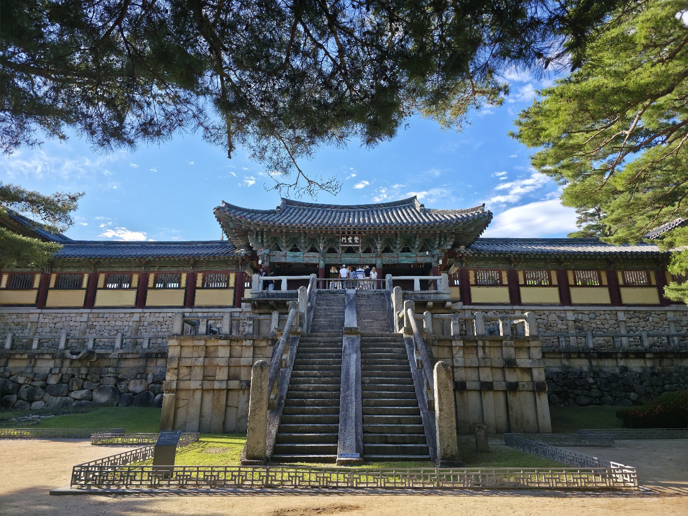

Bulguksa Temple: A Guide to Gyeongju’s Great Silla-Era Sanctuary
At a glance: Bulguksa is a historic Buddhist temple in Gyeongju, known for its stone terraces, pagodas and enduring role in Korean Buddhist culture. Set aside time to explore the grounds at an unhurried pace, and check the official website before visiting for current visitor information.
Address: 385 Bulguk-ro, Gyeongju, Gyeongsangbuk-do
Google Maps: 4.6/5 from 18,209 reviews at the time of writing
Why visit Bulguksa?
Bulguksa is more than a photogenic temple stop. It is a place to see how architecture, Buddhist practice and the history of the Silla kingdom come together. Gyeongju served as Silla’s capital for centuries, and the temple’s monumental layout reflects the religious and artistic ambitions of that period.
The temple is part of the UNESCO World Heritage property Seokguram Grotto and Bulguksa Temple, inscribed in 1995. Its historic buildings have undergone restoration over time, but the grounds retain a remarkable sense of scale and craftsmanship. Stonework, stairways, courtyards and wooden halls guide visitors through a sequence of spaces rather than presenting one single viewpoint.
Give yourself time to look closely. The small details—the joints in the stone, the carved decorations and the contrast between the temple’s wooden structures and its stone foundations—are just as rewarding as the familiar postcard views.
What to see on the grounds
The main temple area is centred on Daeungjeon Hall. Nearby, two celebrated stone pagodas, Dabotap and Seokgatap, offer strikingly different designs. Dabotap is elaborate and intricately detailed, while Seokgatap has a simpler, more restrained form. Seeing them together makes the variety of Silla stonework especially clear.
Look for the temple’s stone bridges and stairways, including Cheongungyo and Baegungyo. These are historic architectural features, not simply convenient routes between levels; follow current signs and barriers rather than attempting to climb or cross restricted sections. Elsewhere, halls and smaller courtyards create quieter corners away from the best-known views.
Bulguksa remains a Buddhist place of worship as well as a heritage site. If ceremonies or prayer are taking place, keep your voice low, give worshippers room and follow any posted photography guidance. A respectful visit makes the experience better for everyone.
How to plan your visit
Allow enough time to walk the grounds without rushing. The visit involves outdoor paths, changes in level and stone steps, so comfortable shoes are a sensible choice. If you have limited mobility or are visiting with a stroller, check current access information with the temple before setting out; some historic areas may be difficult to navigate.
Bulguksa is often combined with Seokguram Grotto, another major heritage site associated with the same UNESCO listing. Treat them as separate stops and confirm the day’s logistics before planning both, rather than assuming the visit between them will be effortless. The official website is the best place to check current visitor details, including any changes that could affect your plans.
For a more contemplative visit, arrive with enough flexibility to pause in the courtyards and observe the setting. Weekends, holidays and popular travel seasons can feel busier, so allow extra time if you prefer to move slowly or take photographs.
Good to know
- Check before you go: Opening information and visitor arrangements can change. Consult Bulguksa’s official website for the latest details.
- Dress for walking outdoors: Paths include uneven stone surfaces and steps. Wear comfortable footwear and plan for the weather.
- Be considerate: This is an active religious site. Keep noise down, respect worship areas and follow signs about access and photography.
- Use the full address: Bulguksa is at 385 Bulguk-ro, Gyeongju, Gyeongsangbuk-do. Save the Google Maps link below before travelling.
- Check the listing: Google Maps currently shows a 4.6 rating from 18,209 reviews. Ratings and review totals can change.
Useful links
FAQ
Is Bulguksa worth visiting if I am interested in history?
Yes. Its Silla-era heritage, historic stonework and Buddhist architecture make it one of Gyeongju’s most significant cultural visits.
Can I visit Bulguksa and Seokguram Grotto on the same day?
They are commonly planned together, but they are separate sites. Check current visitor information and transport logistics before arranging both in one day.
What should I wear to Bulguksa?
Choose comfortable shoes for outdoor paths, uneven surfaces and steps. As Bulguksa is also a place of worship, dress and behave respectfully.